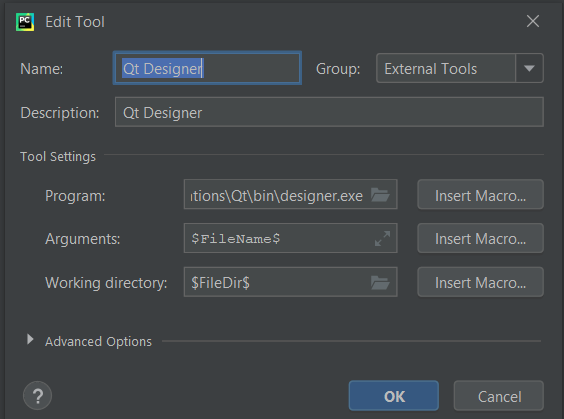
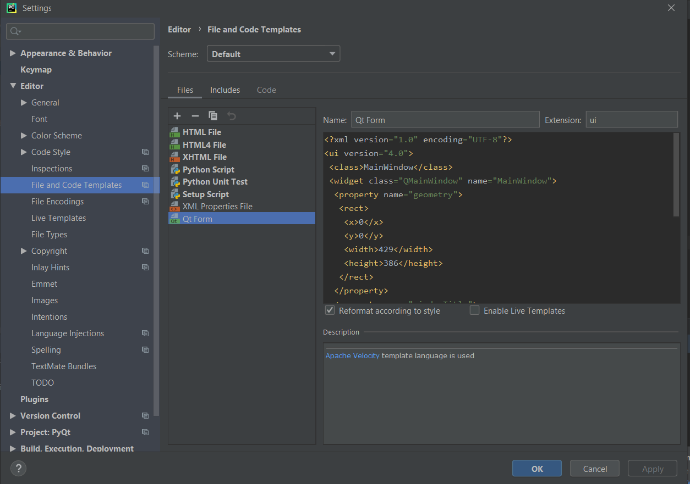
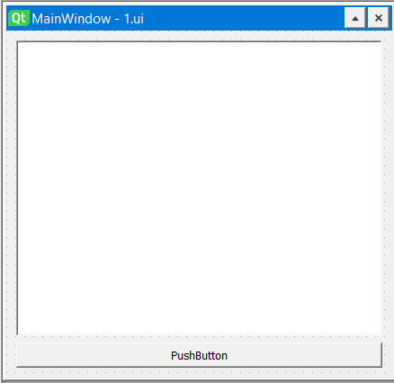
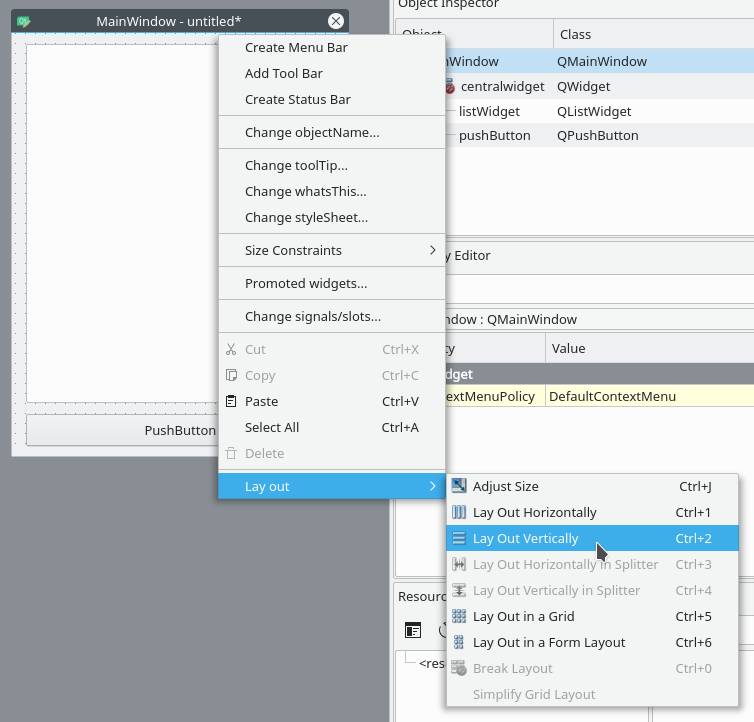
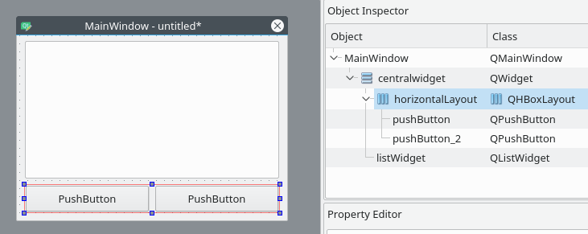
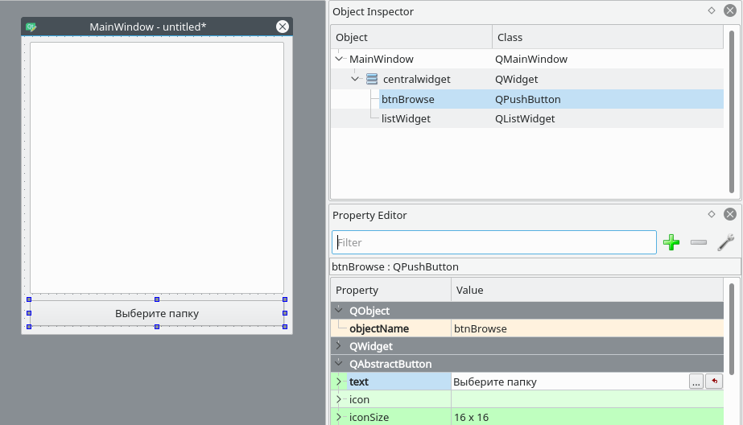
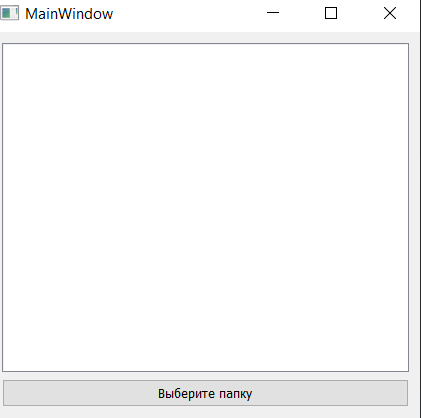
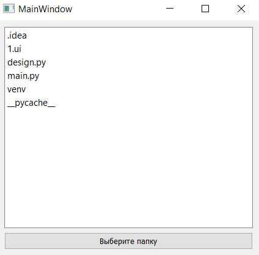

Для начала создайте новый проект в pycharm.
Установим PyQt:
Шаг 1. File -> Settings -> Project: имя проекта -> Project Interpreter
Шаг 2. Выбираете нужный интерпретатор Python.
Шаг 3. Нажимаем на плюсик, чтобы добавить новый пакет
Шаг 4. Находим пакет “PyQt5”.
Шаг 5. Нажимаем Install Package
И так же устанавливаем пакет pyQt5-tools
Далее настроим PyCharm для работы с библиотекой PyQt5.
Первым делом подключим Designer, чтобы можно было более удобно создавать ui-файлы.
Шаг 1. Переходим в меню «File» → «Settings» → «Tools» → «External tools»
Шаг 2. Нажимаем на плюсик, чтобы создать новый инструмент.
Шаг 3. Вписываем следующие данные и нажимаем ок.
В пункте Program находим файл designer.exe. Он находится по следующему пути:
Название проекта \venv\Lib\site-packages\qt5_applications\Qt\bin\designer.exe
Теперь добавим новый тип файла (для ui).
Шаг 1. «File» → «Settings» → «Editor» → «File and code Templates»
Шаг 2. Нажимаем на плюсик, чтобы добавить описание нового шаблона
Шаг 3. Заполняем все поля согласно образцу
Вот код для вставки в поле
<?xml version="1.0" encoding="UTF-8"?>
<ui version="4.0">
<class>MainWindow</class>
<widget class="QMainWindow" name="MainWindow">
<property name="geometry">
<rect>
<x>0</x>
<y>0</y>
<width>429</widt>
<height>386</height>
</rect>
</property>
<property name="windowTitle">
<string>MainWindow</string>
</property>
<widget class="QWidget" name="centralwidget">
</widget>
</widget>
<resources/ >
<connections/>
</ui>
Шаг 4. Нажимаем «OK».
Теперь у нас появилась возможность не только создавать файлы форм, но и запускать Qt Designer не выходя из PyCharm. Делается это следующим образом:
Создаем файл в формате ui.
Наводим курсор на UI-файл → Правая кнопка мыши → «External tools» → «Qt Designer»
Если дизайнер не запускается, и выдает ошибку, то нужно сделать следующее:
Заходим в папку нашего проекта:
Название проекта → venv → Lib → site-packages → PyQt5 → Qt → plugins
В папке plugins копируем папку platforms
После этого переходим в папку qt5_applications → Qt → bin,
И вставляем туда папку platforms
После этого должно все работать.
После открытия файла в дизайнере вы увидите, что новая форма уже создана.
Форма — шаблон для окна, размер которого можно менять и куда можно вставлять объекты из окна виджетов и т.д.
Все элементы формы и их иерархия по умолчанию отображаются в правой части окна Qt Designer под названием Object Inspector. Вы с лёгкостью можете удалять объекты, кликая по ним правой кнопкой мыши в этом окне. Или же вы можете выбрать их в основной форме и нажать клавишу DEL на клавиатуре.
Ознакомьтесь с интерфейсом, он довольно простой.
Теперь дайте попробуем создать нашу первую форму:
Перетащите куда-нибудь в основную форму List Widget и Push Button из Widget Box.
Макеты
Вместо использования фиксированных позиций и размеров элементов в приложении лучше использовать макеты. Фиксированные позиции и размеры у вас будут выглядеть хорошо (пока вы не измените размер окна), но вы никогда не можете быть уверены, что всё будет точно так же на других машинах и/или операционных системах.
Макеты представляют собой контейнеры для виджетов, которые будут удерживать их на определённой позиции относительно других элементов. Поэтому при изменении размера окна размер виджетов тоже будет меняться.
Перетащите список и кнопку в форме и измените их размер, чтобы вышло вот так:
Основное окно уже поддерживает макеты, поэтому нам ничего не нужно добавлять в нашу форму. Просто кликните правой кнопкой мыши по Main Window в Object Inspector и выберите Lay out → Lay out vertically. Также вы можете кликнуть правой кнопкой по пустой области в форме и выбрать те же опции:
Ваши элементы должны быть в том же порядке, что и до внесённых изменений, но если это не так, то просто перетащите их на нужное место.
Так как мы использовали вертикальное размещение, все элементы, которые мы добавим, будут располагаться вертикально. Можно комбинировать размещения для получения желаемого результата. Например, горизонтальное размещение двух кнопок в вертикальном будет выглядеть так:
Если у вас не получается переместить элемент в главном окне, вы можете сделать это в окне Object Inspector.
Последние штрихи
Теперь, благодаря вертикальному размещению, наши элементы выровнены правильно. Единственное, что осталось сделать (но не обязательно), — изменить имя элементов и их текст.
В простом приложении вроде этого с одним лишь списком и кнопкой изменение имён не обязательно, так как им в любом случае просто пользоваться. Тем не менее правильное именование элементов — то, к чему стоит привыкать с самого начала.
Свойства элементов можно изменить в разделе Property Editor.
Нажмите на кнопку, которую вы добавили в форму. Теперь в Property Editor вы должны видеть все свойства этого элемента. В данный момент нас интересуют objectName и text в разделе QAbstractButton. Вы можете сворачивать разделы в Property Editor нажатием по названию раздела.
Измените значение objectName на btnBrowse и text на Выберите папку.
Должно получиться так:
Именем объекта списка является listWidget, что вполне подходит в данном случае.
Закрываем дизайнер и он спрашивает сохранить ли изменения в файле. Нажимаем save.
Превращаем дизайн в код
Конечно, можно использовать .ui-файлы напрямую из Python-кода, однако есть и другой путь, который может показаться легче. Можно конвертировать код .ui-файла в Python-файл, который мы потом сможем импортировать и использовать. Для этого мы используем команду pyuic5 из терминала/командной строки.
Чтобы конвертировать .ui-файл в Python-файл с названием design.py, в терминале используйте следующую команду:
$ pyuic5 design.ui -o design.py
Пишем код
Теперь у нас есть файл design.py с нужной частью дизайна нашего приложения и мы начинать работу над созданием его логики.
Создайте файл main.py
Используем дизайн
Для Python GUI приложения понадобятся следующие модули:
import sys # sys нужен для передачи argv в QApplication
from PyQt5 import QtWidgets
Также нам нужен код дизайна, который мы создали ранее, поэтому его мы тоже импортируем:
import design # Это наш конвертированный файл дизайна
Так как файл с дизайном будет полностью перезаписываться каждый раз при изменении дизайна, мы не будем изменять его. Вместо этого мы создадим новый класс ExampleApp, который объединим с кодом дизайна для использования всех его функций:
class ExampleApp(QtWidgets.QMainWindow, design.Ui_MainWindow):
def __init__(self):
# Это здесь нужно для доступа к переменным, методам
# и т.д. в файле design.py
super().__init__()
self.setupUi(self) # Это нужно для инициализации нашего дизайна
В этом классе мы будем взаимодействовать с элементами интерфейса, добавлять соединения и всё остальное, что нам потребуется. Но для начала нам нужно инициализировать класс при запуске кода. С этим мы разберёмся в функции main():
def main():
app = QtWidgets.QApplication(sys.argv) # Новый экземпляр QApplication
window = ExampleApp() # Создаём объект класса ExampleApp
window.show() # Показываем окно
app.exec_() # и запускаем приложение
И чтобы выполнить эту функцию, мы воспользуемся привычной конструкцией:
if __name__ == '__main__': # Если мы запускаем файл напрямую, а не импортируем
main() # то запускаем функцию main()
Если запустить main.py то наше приложение запустится:
Но нажатие на кнопку ничего не даёт, поэтому нам придётся с этим разобраться.
Добавляем функциональность в наше Python GUI приложение
Весь дальнейший код пишется внутри класса ExampleApp.
Начнём с кнопки Выберите папку. Привязать к функции событие вроде нажатия на кнопку можно следующим образом:
self.btnBrowse.clicked.connect(self.browse_folder)
Добавьте эту строку в метод __init__ класса ExampleApp, чтобы выполнить привязку при запуске приложения. А теперь взглянем на неё поближе:
self.btnBrowse: здесь btnBrowse — имя объекта, который мы определили в Qt Designer. self говорит само за себя и означает принадлежность к текущему классу;
clicked — событие, которое мы хотим привязать. У разных элементов разные события, например, у виджетов списка есть itemSelectionChanged и т.д.;
connect() — метод, который привязывает событие к вызову переданной функции;
self.browse_folder — просто функция (метод), которую мы описали в классе ExampleApp.
Для открытия диалога выбора папки мы можем использовать встроенный метод QtWidgets.QFileDialog.getExistingDirectory:
directory = QtWidgets.QFileDialog.getExistingDirectory(self, "Выберите папку")
Если пользователь выберет директорию, переменной directory присвоится абсолютный путь к выбранной директории, в противном случае она будет равна None. Чтобы не выполнять код дальше, если пользователь закроет диалог, мы используем команду if directory:.
Для отображения содержимого директории нам нужно импортировать os:
import os
И получить список содержимого следующим образом:
os.listdir(path)
Для добавления элементов в listWidget мы используем метод addItem(), а для удаления всех элементов у нас есть self.listWidget.clear().
В итоге функция browse_folder должна выглядеть так:
def browse_folder(self):
self.listWidget.clear() # На случай, если в списке уже есть элементы
directory = QtWidgets.QFileDialog.getExistingDirectory(self, "Выберите папку")
# открыть диалог выбора директории и установить значение переменной
# равной пути к выбранной директории
if directory: # не продолжать выполнение, если пользователь не выбрал директорию
for file_name in os.listdir(directory): # для каждого файла в директории
self.listWidget.addItem(file_name) # добавить файл в listWidget
Теперь, если запустить приложение, нажать на кнопку и выбрать директорию, мы увидим:
Это были основы использования Qt Designer и PyQt для разработки Python GUI приложения. Теперь вы можете спокойно изменять дизайн приложения и использовать команду pyuic5 без страха потерять написанный код.